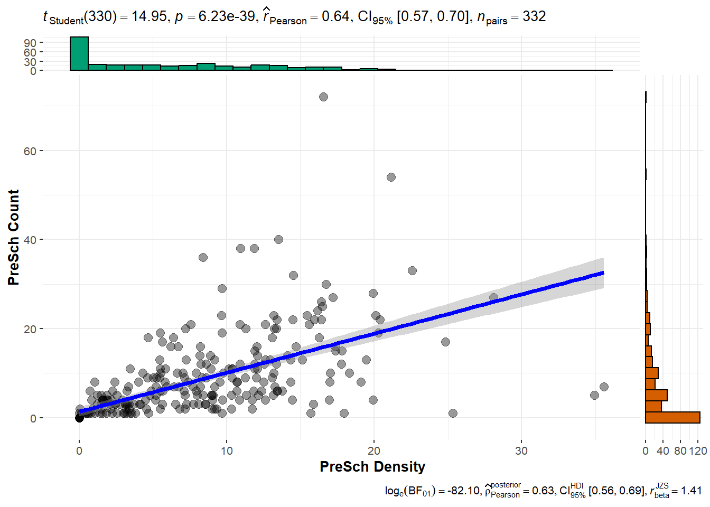

pacman::p_load(sf, tidyverse, tmap, ggstatsplot)In-Class Exercise 1: Introduction to Geospatial Analytics
Getting Started
Data Sources
The exercise uses the following data sources:
Master Plan 2014 Subzone Boundary from data.gov.sg in SHP and KML formats
Master Plan 2019 Subzone Boundary from data.gov.sg
Pre-school locations from data.gov.sg
Singapore 2023 population from singstat.gov.sg
Installing and launching R packages
This exercise will make use of four R packages: sf, tidyverse, ggstatsplot and tmap.
The code chunk below uses p_load() of pacman package to check if the packages are installed in the computer. It installs them first if they are not. It then loads them into R.
Data Preparation
Importing the Geospatial Data
The code chunk below loads the Masterplan subzone boundary shape file as a dataframe mpsz14_shp
mpsz14_shp = st_read(dsn = "data/geospatial",
layer = "MP14_SUBZONE_WEB_PL")Reading layer `MP14_SUBZONE_WEB_PL' from data source
`C:\drkrodriguez\ISSS626-GAA\In-class\In-class_Ex01\data\geospatial'
using driver `ESRI Shapefile'
Simple feature collection with 323 features and 15 fields
Geometry type: MULTIPOLYGON
Dimension: XY
Bounding box: xmin: 2667.538 ymin: 15748.72 xmax: 56396.44 ymax: 50256.33
Projected CRS: SVY21The code chunk below loads the Masterplan subzone boundary KML file as a dataframe mpsz14_kml
mpsz14_kml = st_read("data/geospatial/MasterPlan2014SubzoneBoundary.kml")Running the code shows that the data is likely corrupted as it is not being properly loaded into R. To illustrate loading the same data in KML format, we can create a clean KML file using st_write()
st_write(mpsz14_shp,
"data/geospatial/MP14SubzoneBoundary.kml",
delete_dsn = TRUE)Deleting source `data/geospatial/MP14SubzoneBoundary.kml' using driver `KML'
Writing layer `MP14SubzoneBoundary' to data source
`data/geospatial/MP14SubzoneBoundary.kml' using driver `KML'
Writing 323 features with 15 fields and geometry type Multi Polygon.mpsz14_kml = st_read("data/geospatial/MP14SubzoneBoundary.kml")Reading layer `MP14SubzoneBoundary' from data source
`C:\drkrodriguez\ISSS626-GAA\In-class\In-class_Ex01\data\geospatial\MP14SubzoneBoundary.kml'
using driver `KML'
Simple feature collection with 323 features and 2 fields
Geometry type: MULTIPOLYGON
Dimension: XY
Bounding box: xmin: 103.6057 ymin: 1.158699 xmax: 104.0885 ymax: 1.470775
Geodetic CRS: WGS 84The code chunk below loads the 2019 Masterplan subzone boundary SHP file as a dataframe mpsz19_shp
mpsz19_shp = st_read(dsn = "data/geospatial",
layer = "MPSZ-2019")Reading layer `MPSZ-2019' from data source
`C:\drkrodriguez\ISSS626-GAA\In-class\In-class_Ex01\data\geospatial'
using driver `ESRI Shapefile'
Simple feature collection with 332 features and 6 fields
Geometry type: MULTIPOLYGON
Dimension: XY
Bounding box: xmin: 103.6057 ymin: 1.158699 xmax: 104.0885 ymax: 1.470775
Geodetic CRS: WGS 84The output shows that the data uses a geographic coordinate system instead of a projected coordinate system that we need for analysis. This needs to be translated before we can analyze this data with our other datasets. To do this, we can revise the code to:
mpsz19_shp = st_read(dsn = "data/geospatial",
layer = "MPSZ-2019") %>%
st_transform(crs = 3414)Reading layer `MPSZ-2019' from data source
`C:\drkrodriguez\ISSS626-GAA\In-class\In-class_Ex01\data\geospatial'
using driver `ESRI Shapefile'
Simple feature collection with 332 features and 6 fields
Geometry type: MULTIPOLYGON
Dimension: XY
Bounding box: xmin: 103.6057 ymin: 1.158699 xmax: 104.0885 ymax: 1.470775
Geodetic CRS: WGS 84The code chunk below loads the KML file and also shows we have it in geographic coordinate system.
mpsz19_kml = st_read("data/geospatial/MasterPlan2019SubzoneBoundaryNoSeaKML.kml")Reading layer `URA_MP19_SUBZONE_NO_SEA_PL' from data source
`C:\drkrodriguez\ISSS626-GAA\In-class\In-class_Ex01\data\geospatial\MasterPlan2019SubzoneBoundaryNoSeaKML.kml'
using driver `KML'
Simple feature collection with 332 features and 2 fields
Geometry type: MULTIPOLYGON
Dimension: XY, XYZ
Bounding box: xmin: 103.6057 ymin: 1.158699 xmax: 104.0885 ymax: 1.470775
z_range: zmin: 0 zmax: 0
Geodetic CRS: WGS 84The code chunk below loads the preschool location in KML format into a dataframe
preschool_kml = st_read("data/geospatial/PreSchoolsLocation.kml")Reading layer `PRESCHOOLS_LOCATION' from data source
`C:\drkrodriguez\ISSS626-GAA\In-class\In-class_Ex01\data\geospatial\PreSchoolsLocation.kml'
using driver `KML'
Simple feature collection with 2290 features and 2 fields
Geometry type: POINT
Dimension: XYZ
Bounding box: xmin: 103.6878 ymin: 1.247759 xmax: 103.9897 ymax: 1.462134
z_range: zmin: 0 zmax: 0
Geodetic CRS: WGS 84The code chunk below loads the preschool location in GeoJSON format into a dataframe
preschool_geojson = st_read("data/geospatial/PreSchoolsLocation.geojson") Reading layer `PreSchoolsLocation' from data source
`C:\drkrodriguez\ISSS626-GAA\In-class\In-class_Ex01\data\geospatial\PreSchoolsLocation.geojson'
using driver `GeoJSON'
Simple feature collection with 2290 features and 2 fields
Geometry type: POINT
Dimension: XYZ
Bounding box: xmin: 103.6878 ymin: 1.247759 xmax: 103.9897 ymax: 1.462134
z_range: zmin: 0 zmax: 0
Geodetic CRS: WGS 84The last two files are again in GCS (WGS84) rather than projected coordinate system (SVY21) We can reconfirm this with the next code chunk
st_crs(preschool_kml)Coordinate Reference System:
User input: WGS 84
wkt:
GEOGCRS["WGS 84",
DATUM["World Geodetic System 1984",
ELLIPSOID["WGS 84",6378137,298.257223563,
LENGTHUNIT["metre",1]]],
PRIMEM["Greenwich",0,
ANGLEUNIT["degree",0.0174532925199433]],
CS[ellipsoidal,2],
AXIS["geodetic latitude (Lat)",north,
ORDER[1],
ANGLEUNIT["degree",0.0174532925199433]],
AXIS["geodetic longitude (Lon)",east,
ORDER[2],
ANGLEUNIT["degree",0.0174532925199433]],
ID["EPSG",4326]]We can use the following code to import the preschool location and project it into SVY21
preschool <- st_read("data/geospatial/PreSchoolsLocation.kml") %>%
st_transform(crs = 3414)Reading layer `PRESCHOOLS_LOCATION' from data source
`C:\drkrodriguez\ISSS626-GAA\In-class\In-class_Ex01\data\geospatial\PreSchoolsLocation.kml'
using driver `KML'
Simple feature collection with 2290 features and 2 fields
Geometry type: POINT
Dimension: XYZ
Bounding box: xmin: 103.6878 ymin: 1.247759 xmax: 103.9897 ymax: 1.462134
z_range: zmin: 0 zmax: 0
Geodetic CRS: WGS 84st_crs(preschool)Coordinate Reference System:
User input: EPSG:3414
wkt:
PROJCRS["SVY21 / Singapore TM",
BASEGEOGCRS["SVY21",
DATUM["SVY21",
ELLIPSOID["WGS 84",6378137,298.257223563,
LENGTHUNIT["metre",1]]],
PRIMEM["Greenwich",0,
ANGLEUNIT["degree",0.0174532925199433]],
ID["EPSG",4757]],
CONVERSION["Singapore Transverse Mercator",
METHOD["Transverse Mercator",
ID["EPSG",9807]],
PARAMETER["Latitude of natural origin",1.36666666666667,
ANGLEUNIT["degree",0.0174532925199433],
ID["EPSG",8801]],
PARAMETER["Longitude of natural origin",103.833333333333,
ANGLEUNIT["degree",0.0174532925199433],
ID["EPSG",8802]],
PARAMETER["Scale factor at natural origin",1,
SCALEUNIT["unity",1],
ID["EPSG",8805]],
PARAMETER["False easting",28001.642,
LENGTHUNIT["metre",1],
ID["EPSG",8806]],
PARAMETER["False northing",38744.572,
LENGTHUNIT["metre",1],
ID["EPSG",8807]]],
CS[Cartesian,2],
AXIS["northing (N)",north,
ORDER[1],
LENGTHUNIT["metre",1]],
AXIS["easting (E)",east,
ORDER[2],
LENGTHUNIT["metre",1]],
USAGE[
SCOPE["Cadastre, engineering survey, topographic mapping."],
AREA["Singapore - onshore and offshore."],
BBOX[1.13,103.59,1.47,104.07]],
ID["EPSG",3414]]The code chunks below load the Master Plan 2019 Subzone Boundary Data into R dataframes
mpsz19_shp <- st_read(dsn = "data/geospatial",
layer = "MPSZ-2019")Reading layer `MPSZ-2019' from data source
`C:\drkrodriguez\ISSS626-GAA\In-class\In-class_Ex01\data\geospatial'
using driver `ESRI Shapefile'
Simple feature collection with 332 features and 6 fields
Geometry type: MULTIPOLYGON
Dimension: XY
Bounding box: xmin: 103.6057 ymin: 1.158699 xmax: 104.0885 ymax: 1.470775
Geodetic CRS: WGS 84mpsz19_kml <- st_read("data/geospatial/MasterPlan2019SubzoneBoundaryNoSeaKML.kml")Reading layer `URA_MP19_SUBZONE_NO_SEA_PL' from data source
`C:\drkrodriguez\ISSS626-GAA\In-class\In-class_Ex01\data\geospatial\MasterPlan2019SubzoneBoundaryNoSeaKML.kml'
using driver `KML'
Simple feature collection with 332 features and 2 fields
Geometry type: MULTIPOLYGON
Dimension: XY, XYZ
Bounding box: xmin: 103.6057 ymin: 1.158699 xmax: 104.0885 ymax: 1.470775
z_range: zmin: 0 zmax: 0
Geodetic CRS: WGS 84The code chunk below checks the CRS information of mpsz19_shp
st_crs(mpsz19_shp)Coordinate Reference System:
User input: WGS 84
wkt:
GEOGCRS["WGS 84",
DATUM["World Geodetic System 1984",
ELLIPSOID["WGS 84",6378137,298.257223563,
LENGTHUNIT["metre",1]]],
PRIMEM["Greenwich",0,
ANGLEUNIT["degree",0.0174532925199433]],
CS[ellipsoidal,2],
AXIS["latitude",north,
ORDER[1],
ANGLEUNIT["degree",0.0174532925199433]],
AXIS["longitude",east,
ORDER[2],
ANGLEUNIT["degree",0.0174532925199433]],
ID["EPSG",4326]]It appears mpsz19_shp does not have the correct EPSG code of 3414. The same is true for preschool. The code chunk below reloads the information and already applies the correct EPSG code
mpsz19_shp <- st_read(dsn = "data/geospatial",
layer = "MPSZ-2019") %>%
st_transform(crs = 3414)Reading layer `MPSZ-2019' from data source
`C:\drkrodriguez\ISSS626-GAA\In-class\In-class_Ex01\data\geospatial'
using driver `ESRI Shapefile'
Simple feature collection with 332 features and 6 fields
Geometry type: MULTIPOLYGON
Dimension: XY
Bounding box: xmin: 103.6057 ymin: 1.158699 xmax: 104.0885 ymax: 1.470775
Geodetic CRS: WGS 84preschool <- st_read("data/geospatial/PreSchoolsLocation.kml") %>%
st_transform(crs = 3414)Reading layer `PRESCHOOLS_LOCATION' from data source
`C:\drkrodriguez\ISSS626-GAA\In-class\In-class_Ex01\data\geospatial\PreSchoolsLocation.kml'
using driver `KML'
Simple feature collection with 2290 features and 2 fields
Geometry type: POINT
Dimension: XYZ
Bounding box: xmin: 103.6878 ymin: 1.247759 xmax: 103.9897 ymax: 1.462134
z_range: zmin: 0 zmax: 0
Geodetic CRS: WGS 84Geospatial Data Wrangling
The code chunk below counts the number of preschools in each planning subzone
mpsz19_shp <- mpsz19_shp %>%
mutate(`PreSch Count` = lengths(
st_intersects(mpsz19_shp, preschool)))The code below then does the following in one line of code:
- Derives the area of each planning zone
- Drops the unit of measurement of the area
- Calculates the density of pre-schools at each planning zone
mpsz19_shp <- mpsz19_shp %>%
mutate(Area = units::drop_units(
st_area(.)),
`PreSch Density` = `PreSch Count` / Area * 1000000
)Statistical Analysis
Once we have computed the area, we can perform the appropriate analysis to see if there are any relationships.
The code below creates a plot of the preschool density and the preschool count using ggscatterstats() of ggstatsplot package
mpsz19_shp$`PreSch Density` <- as.numeric(as.character(mpsz19_shp$`PreSch Density`))
mpsz19_shp$`PreSch Count` <- as.numeric(as.character(mpsz19_shp$`PreSch Count`))
mpsz19_shp <- as.data.frame(mpsz19_shp)
ggscatterstats(data = mpsz19_shp,
x = `PreSch Density`,
y = `PreSch Count`,
type = "parametric")Registered S3 method overwritten by 'ggside':
method from
+.gg ggplot2`stat_xsidebin()` using `bins = 30`. Pick better value with `binwidth`.
`stat_ysidebin()` using `bins = 30`. Pick better value with `binwidth`.
Importing and Wrangling Aspatial Data
We load the 2023 population data into a dataframe called popdata and see that there are 101K rows and 7 columns.
popdata = read_csv("data/aspatial/respopagesextod2023.csv")Rows: 100928 Columns: 7
── Column specification ────────────────────────────────────────────────────────
Delimiter: ","
chr (5): PA, SZ, AG, Sex, TOD
dbl (2): Pop, Time
ℹ Use `spec()` to retrieve the full column specification for this data.
ℹ Specify the column types or set `show_col_types = FALSE` to quiet this message.The code chunk below prepares a dataframe showing the population by planning area and planning subzone
popdata2023 <- popdata %>%
group_by(PA, SZ, AG) %>%
summarise(`POP`=sum(`Pop`)) %>%
ungroup() %>%
pivot_wider(names_from=AG,
values_from = POP)`summarise()` has grouped output by 'PA', 'SZ'. You can override using the
`.groups` argument.colnames(popdata2023) [1] "PA" "SZ" "0_to_4" "10_to_14" "15_to_19"
[6] "20_to_24" "25_to_29" "30_to_34" "35_to_39" "40_to_44"
[11] "45_to_49" "50_to_54" "55_to_59" "5_to_9" "60_to_64"
[16] "65_to_69" "70_to_74" "75_to_79" "80_to_84" "85_to_89"
[21] "90_and_Over"We then convert the dataframe where the age ranges are grouped into three groups (ECONOMY ACTIVE, AGED, YOUNG) and also introduce the DEPENDENCY column which is the ratio of YOUNG and AGED compared to ECONOMY ACTIVE
popdata2023 <- popdata2023 %>%
mutate(YOUNG=rowSums(.[3:6]) # Aged 0 - 24, 10 - 24
+rowSums(.[14])) %>% # Aged 5 - 9
mutate(`ECONOMY ACTIVE` = rowSums(.[7:13])+ # Aged 25 - 59
rowSums(.[15])) %>% # Aged 60 -64
mutate(`AGED`=rowSums(.[16:21])) %>%
mutate(`TOTAL`=rowSums(.[3:21])) %>%
mutate(`DEPENDENCY`=(`YOUNG` + `AGED`)
/ `ECONOMY ACTIVE`) %>%
select(`PA`, `SZ`, `YOUNG`,
`ECONOMY ACTIVE`, `AGED`,
`TOTAL`, `DEPENDENCY`)Joining Aspatial Data with Geospatial Data
the code chunk below combines the population information with the geospatial data for the planning zone boundaries
popdata2023 <- popdata2023 %>%
mutate_at(.vars = vars(PA, SZ),
.funs = list(toupper))
mpsz_pop2023 <- left_join(mpsz19_shp, popdata2023,
by = c("SUBZONE_N" = "SZ"))
pop2023_mpsz <- left_join(popdata2023, mpsz19_shp,
by = c("SZ" = "SUBZONE_N"))